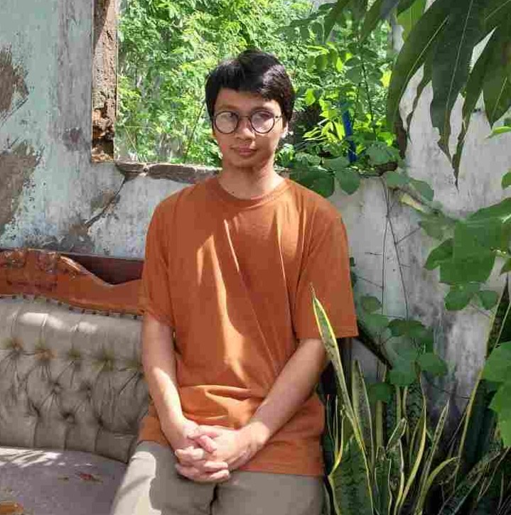

Rayhan's Web Page

Hi, welcome to my web page!
Rayhan Hidayat is currently working at Fakultas Ilmu Komputer UPN
'Veteran' Jakarta (UPNVJ) as a Laboratory Assistant.
In this role, he is mainly responsible for building and maintaining
the faculty's information systems. He also assists with server and
laboratory administration.
For more information, you can visit his
Github
and
Linkedin
profiles.
Past Projects
- Lentera FIK Web App - Thesis Management Web App